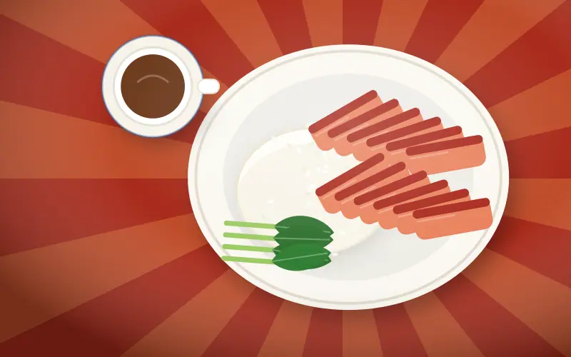

燒 · Roast Meats22%OFF
Legendary · Sheung Wan · Central & Western
Chan Kan Kee Chiu Chow
陳勤記鹵鵝飯店
Chiu Chow braised goose rice + kung fu tea潮州鹵鵝飯 + 功夫茶
$82$105Save HK$23
69/100
HK Cheap Eats Value Score · Good valueEstimated from the editors’ rating, price vs similar roast meats places and MTR access. Portion size and customer reviews aren’t scored yet. How it’s calculated
- Hours
- 11:00 – 21:30 · closed Sundays
- Best for
- Lunch
- Nearest MTR
- Sheung Wan 上環 · 5 min walk
- Pay with
- Cash
- Cuisine
- Roast Meats 燒味
- Area
- Sheung Wan 上環 · Central & Western 中西區
- Status
- Unverified
- Source
- HK Cheap Eats editors
- Listed
- 14 Nov 2026
- Price last checked in store
- Not yet
Picture is an illustration, not a photo of this restaurant. Spotted a wrong price or hours? Suggest a correction in the app.